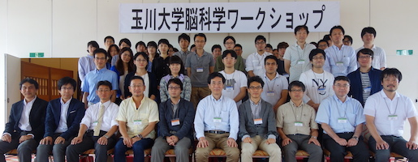
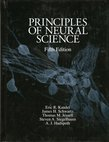

<!doctype html>
<html>
<head>
<meta charset="UTF-8">
<title>activity_en</title>
<link href="res/css/tool.css" rel="stylesheet" type="text/css">
<base target="_blank">
</head>

<body>
<!-- <p class="style13">We are recruiting a postdoctoral researcher (3 years) interested in Bayesian inference, nonlinear time-series analysis, and active inference.</p> -->
<p><strong>2025 Dec 09</strong> A paper published in Nature Communcations <a href="https://doi.org/10.1038/s41467-025-66669-w">link</a></p>
<p><strong>2025 Oct 10</strong> A paper published in Neural Computation <a href="https://doi.org/10.1162/neco.a.35">link</a></p>
<p><strong>2025 Jun 23</strong> A paper published in Nature Communcations <a href="https://doi.org/10.1038/s41467-025-61475-w">link</a></p>
<p><strong>2025 Feb 07</strong> A paper published in International Journal of Forecasting <a href="http://dx.doi.org/10.1016/j.ijforecast.2025.01.002">link</a></p>
<p>&nbsp;</p>
<p><strong>2023 Jun 23</strong> A paper published in Nature Communcations <a href="https://www.nature.com/articles/s41467-023-39107-y">link</a></p>
<p><strong>2023 Feb 15</strong> A paper published in Communcations Biology <a href="https://www.nature.com/articles/s42003-023-04511-z">link</a></p>
<p><strong>2022 Jan 14</strong> A paper published in Communcations Biology <a href="https://www.nature.com/articles/s42003-021-02994-2">link</a></p>
<p><strong>2021 Sep 30</strong> A paper published in Nature Communcations <a href="https://www.nature.com/articles/s41467-021-26010-7">link</a></p>
<p><strong>2021 Feb 19 </strong>A paper published in Nature Communcations <a href="https://doi.org/10.1038/s41467-021-20890-5">link</a></p>
<p>&nbsp;</p>
<p><strong>2020 Jul 24 </strong>A preprint uploaded to arXiv. <strong>The principles of adaptation in organisms and machines II: Thermodynamics of the Bayesian brain.</strong> (2020) <a href="https://arxiv.org/abs/2006.13158">arXiv:2006.13158</a></p>
<p><strong>2020 Feb 12 </strong>Posted an arXiv paper by Aguilera and Moosavi <a href="https://arxiv.org/abs/2002.04309">link</a></p>
<blockquote>
  <p><strong>A unifying framework for mean field theories of asymmetric kinetic Ising systems.</strong> <em>Miguel Aguilera, S. Amin Moosavi, Hideaki Shimazaki </em><a href="https://arxiv.org/abs/2002.04309">arXiv:2002.04309</a></p>
</blockquote>
<p><strong>2020 Feb 27　</strong>Poster presentations at Cosyne2020 <a href="http://www.cosyne.org/c/index.php?title=Cosyne2020_Program">link</a></p>
<blockquote>
  <p><strong>II-23</strong> Inferring network motifs from neural activity using analytic input-output relation of LIF neurons. <em>Safura Rashid Shomali, Majid Nili Ahmadabadi, Seyyed Nader Rasuli, Hideaki Shimazaki</em></p>
  <p><strong>III-80</strong> Effects of structured neural correlations in population coding: beneficial or detrimental?. <em>Seyedamin Moosavi, Magalie Tatischeff, Bingyue Zhu, Hideaki Shimazaki</em></p>
</blockquote>
<p><strong>2020年 Feb 14</strong>　Talk at Computational  Principles in  Active Perception and Reinforcement Learning in the Brain <a href="https://sites.google.com/view/active-perception-rl/">link</a></p>
<p><strong>2020 Jan 28</strong>　Talk at <strong>C</strong>ombining&nbsp;<strong>I</strong>nformation theoretic&nbsp;<strong>P</strong>erspectives on&nbsp;<strong>A</strong>gency <a href="https://cipa-workshop.weebly.com">link</a></p>
<p>&nbsp;</p>
<p><strong>2</strong><strong>019 Dec 11　</strong>Updated a preprint on the complex ICA by MaBouDi, Krishna et al. <a href="https://doi.org/10.1101/112813">link</a></p>
<p><strong>2019 Dec 7　</strong>Talk at Singurarity Salon at Tokyo (in Japanese) <a href="https://singularity-tokyo.connpass.com/event/154614/">link</a></p>
<p><strong>2019 Nov 16　</strong>Talk at Singuraity Salon at Osaka (in Japanese)<strong> </strong><a href="https://singularity39.peatix.com/view">link</a></p>
<p><strong>2</strong><strong>019 Nov 14　</strong>Uploaded a preprint on structured variational inference by spiking net by Shukla et al. <a href="https://doi.org/10.1101/112813">link</a></p>
<p><strong>2019 Sep 5　</strong>Edited Japanese Neural Network Society Journal </p>
<p><strong>2019 Jul 18　</strong><span class="style13">Jimmy Gaudreault received Best Student Award at IJCNN2019!</span> &nbsp;(2 students awards in 803 papers&nbsp;from 1532 submissions)</p>
<p>&nbsp;</p>
<p><strong>2019 Sep 29</strong> Invited Talk Shimazaki The 7th International Congress on Cognitive Neurodynamics, Italy </p>
<p><strong>2019 Sep 17</strong> Talk by Miguel Aguilera et al., 15th Granada Seminar on Computational and Statistical Physics. <a href="http://ergodic.ugr.es/cp/">link</a></p>
<p><strong>2019. Sep 18</strong> Poster by Safura Rashid Shomali et al., Bernstein Conference.  Berlin, Germany <a href="https://abstracts.g-node.org/conference/BC19/abstracts#/uuid/a2331430-7b22-4ef9-9b1b-01d90e082256">link</a></p>
<p>&nbsp;</p>
<p><strong>2019 Aug-Sep</strong>　We organized two events on Free energy principle at National Institute for Physiological Sciences. We invite Dr. Christopher Buckley at Sussex University as a lecturer. </p>
<blockquote>
  <p><strong>Aug 31-Sep 1 <a href="http://www.nips.ac.jp/~myoshi/nins_tutorial2019/">Tutorial workshop of the free energy principle of the brain</a></strong></p>
  <p><strong>Sep 2</strong> Workshop <strong><a href="http://www.nips.ac.jp/~myoshi/nips_workshop2019/">認知神経科学の先端 脳の理論から身体・世界へ</a></strong></p>
</blockquote>
<p><strong>2019 Aug 13</strong>　Invited Lecture　Data science, Statistics &amp; Visualization (DSSV2019), Kyoto </p>
<p><strong>2019 Jun 7</strong>　Talk at Salon du Brain </p>
<blockquote>
  <p>
    <script type="text/javascript">
  document.getElementById('forum_embed').src =
     'https://groups.google.com/forum/embed/?place=forum/kyoto_brain'
     + '&showsearch=true&showpopout=true&showtabs=false'
     + '&parenturl=' + encodeURIComponent(window.location.href);
              </script>
  </p>
</blockquote>
<p><strong>Statistical nalysis of neural population activity: Toward  thermodynamics of the brain</strong> <a href="http://www.cog.ist.i.kyoto-u.ac.jp/SalonDuBrain/index.html">link</a></p>
<p><strong>2019 Mar　Lecture and seminar at OIST </strong>(Kenji Doya Lab) <a href="https://groups.oist.jp/ncu/event/network-architecture-underlying-sparse-neural-activity-characterized-structured-higher">link</a><a href="https://arxiv.org/abs/1902.11233"> Lecture note</a></p>
<p><strong>2019 Mar　</strong>We organized Systems Neuroscience Spring School: Statics and Dynamics of Neural Systems at Kyoto. <a href="http://ishiilab.jp/SNSS/SNSS2019/en/">link</a></p>
<p><strong>2018 Nov</strong>　Posted Dr. Shomali's paper on bioRxiv. <a href="https://doi.org/10.1101/479956">link</a></p>
<p><strong>2018 Jul　</strong>I edited the special issue of Japanese Neural Network Society on the Free Energy Principle (in Japanese) <a href="https://www.jstage.jst.go.jp/browse/jnns/25/3/_contents/-char/ja">link</a></p>
<p><strong>2018 Jan</strong>　<strong>Neural Engine Hypothesis</strong> was published as a chapter of Springer book. <a href="https://doi.org/10.1007/978-3-319-71976-4_11">link</a></p>
<p>&nbsp;</p>
<p><strong>2017 Oct 5</strong> An analysis paper on a LIF model by <strong>Safura Shomali</strong> et al. was accepted for publication in Journal of Computational Neuroscience. </p>
<p><strong>2017 Sep 28</strong> Special talk at Tamagawa University Brain Science Workshop: &quot;Statistics of neural population activity&quot;.</p>
<p></p>
<p><strong>2017 Jul 22</strong> A co-authored paper published MaBouDi H, Shimazaki H, Giurfa M, Chittka L. <strong>Olfactory learning without the mushroom bodies: Spiking neural network models of the honeybee lateral antennal lobe tract reveal its capacities in odour memory tasks of varied complexities.</strong> PLoS Computational Biology (2017) 13(6): e1005551.  [<a href="https://doi.org/10.1371/journal.pcbi.1005551">link</a>]</p>
<p><strong>2017 Mar 3,4 </strong>Intesive lecture courses on the point process theory
  for &quot;<strong>Society for Young Researchers in Neuroscience</strong>&quot;.</p>
<p></p>
<p><strong>2017 Jan 13</strong> A paper published. Donner, Obermeyer, Shimazaki, <strong>Approximate Inference for Time-varying Interactions and Macroscopic Dynamics of Neural Populations</strong>. PLoS Computational Biology (2017) 13(1): e1005309 <a href="http://dx.doi.org/10.1371/journal.pcbi.1005309">[link</a>]</p>
<hr>
<p><strong>2016 May 26</strong> A co-authored paper was published. Mochizuki et al. <strong>Similarity in Neuronal Firing Regimes across Mammalian Species.</strong> <em>Journal of Neuroscience</em> (2016) 36:5736-5747. [<a href="http://doi.org/10.1523/JNEUROSCI.0230-16.2016">link</a>]</p>
<p><strong>2016 Apr 1</strong> A co-authored paper was published. Chou et al. <strong>Social conflict resolution regulated by two dorsal habenular subregions in zebrafish</strong>. <em>Science</em>, Vol. 352, Issue 6281, pp. 87-90 <a href="http://science.sciencemag.org/content/352/6281/87">[link</a>]</p>
<hr>
<p><strong>2015 Dec 24</strong> I uploaded my recent thought on neural dynamcis. <u>Shimazaki H</u>, <strong>Neurons as an Information-theoretic Engine</strong>. <em>arXiv</em>:1512.07855 [<a href="res/pdf/shimazaki_engine15.pdf">pdf, </a><a href="http://arxiv.org/abs/1512.07855">link</a>]</p>
<p><strong>2015 May 15</strong> A paper by HaDi MaBouDi was accepted for publication in Vision Research. MaBouDi H, Shimazaki H, Amari S, Soltanian-Zadeh H, &quot;Representation of Higher-order Statistical Structures in Natural Scenes via Spatial Phase Distributions.&quot; <a href="res/pdf/maboudi_vr15.pdf">pdf</a></p>
<p><strong>2015 May</strong> Our optimization mehtod for  kernel density estimation is being used in  labs of leading neuroscientists. Hill, Fried  &amp; Koch <a href="http://jn.physiology.org/content/early/2014/12/01/jn.00595.2014">J Neurophysiol2015</a>. Ito,	Zhang,	Witter,	Moser	&amp; Moser <a href="http://www.nature.com/nature/journal/vaop/ncurrent/full/nature14396.html">Nature 2015</a>. Manita, Suzuki, ...,  Larkum &amp;  Murayama <a href="http://www.riken.jp/pr/press/2015/20150522_1/">Neuron 2015</a>. </p>
<hr>
<p><strong>2015 Mar 19 </strong>Our paper uncovering the role of silence in characterizing neural population activity has been accepted. Shimazaki, H., Sadeghi, K., Ishikawa, T., Ikegaya, Y. &amp; Toyoizumi, T. <strong>Simultaneous silence organizes structured higher-order interactions in neural populations</strong>. <em>Scientific Reports</em> 5, 9821 (2015)  [<a href="http://doi.org/10.1038/srep09821">link</a>, <a href="res/pdf/shimazaki_scirep15.pdf">preprint</a>]</p>
<hr>
<p><strong>2014 April </strong>Japanese edtition of <strong> <em>Principle of Neural Science</em></strong> was published. <br>
  <strong></strong>I translated the section, &quot;Appendix F, Theoretical Approaches to Neuroscience: Examples from SingleNeurons to Networks&quot; by Abbott, Fusi, and Miller. [<a href="http://www.medsi.co.jp/kandel/">link</a>] </p>
<p></p>
</body>
</html>
